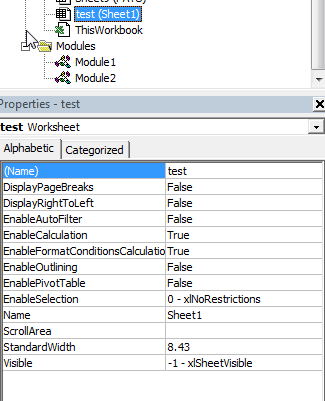

I’m no programmer, as I’ve probably mentioned before…However, I have been learning and improving somewhat in that regard lately, and I’m never afraid to have a bash and conjure up some Frankencode, poking it, stitching bits together and generally waving a lightning rod at it until it does what I want.
My latest adventure was brought to me by a colleague who wanted to be able to generate a censored version of an Excel workbook for sharing with others, which removed some of the columns containing personal information, while preserving tab names and as much formatting as possible.
I looked online and couldn’t find something exact, so I set about piecing something together from different pages and help sites. I thought I’d share my resultant code here in case anyone else found it useful…
It’s worth noting one issue that drove me a bit batty:
The Worksheets(1), Worksheets(2), Worksheets(3)…numbering in the code refer to each sheet in the source workbook numerically from the sheet beginning at the left hand page…so you have to count sheets from left to right to find out which number your sheet is. This is confusing since it effectively means each sheet has three potential names or labels: This strict number order, the (name) - defaults to a sheet number (i.e. depending on which order the sheets are created in), and lastly the visible label on the tab - often whatever name you give it. These last two can be changed by the user. The sheet highlighted in the grab below has been given a (name) of test, has a Name of Sheet1, and then on screen it’s the last tab (Sheet 42) - so the reference in the Macro code below for it would end up being Worksheets(42). It can be very confusing. This workbook had those 42 tabs, and all the sheet references had to be worked out by counting on the screen - because the sheets had been created dynamically and moved around, the numbers they were assigned by the system didn’t correspond to their location. As an example, I have a sheet labelled on the tab as Sheet 2, with a (name) of Sheet42, but in position 32 - so the reference would be Worksheets(32)!

Anyway, rant over - here’s the code - I hope it saves at lease one person some frustration!
Note: When pasting the code, if the comments (lines preceded by ‘) wrap across multiple lines, comment extra lines out with ‘ or delete them as VBA doesn’t like multi-line comments.
Macro for duplicating selected columns from selected Excel worksheets into a new workbook
'replace this with the name of your macro
Sub CopyData()
'defines your variable names as cell ranges
Dim sourceColumnSh1 As Range, sourceColumnSh2 As Range, sourceColumnSh3 As Range, sourceColumnSh4 As Range, sourceColumnSh5 As Range
'Tells excel how many sheets we want new workbooks to contain - replace 5 with any number
Application.SheetsInNewWorkbook = 5
'1st line creates the new workbook, and the subsequent lines declare names for each sheet
Set targetBook = Workbooks.Add
Sheets("Sheet1").Name = "AU"
Sheets("Sheet2").Name = "CCU"
Sheets("Sheet3").Name = "CTU"
Sheets("Sheet4").Name = "Comp Therapy"
Sheets("Sheet5").Name = "Endo"
'The following codeblock assigns a cell range from the original workbook to the variable.
'It also specifies the column destination in the new workbook (i.e. Col A means it will
'be pasted into the workbook starting at the first column.This is probably what you want)
'Duplicate this block and the Destination line below for each sheet you want to copy
'Change the cell range to reflect the columns you want to extract
'To take the whole column, use "A:A" - but I found that this caused large file (on the order of
'36MB) issues when there were hidden cells (i.e. if a filter was used on the original file) so I
'recommend limiting the rows to a reasonable number. Change the '150' part to increase or
'decrease the rows copied.
Set sourceColumnSh1 = Workbooks("YourSourceFileName.xlsm").Worksheets(1).Range("A1:A150,B1:B150,E1:E150,F1:F150,G1:G150,H1:H150,J1:J150,K1:K150,N1:N150")
'Worksheets(1) in the line above refers to the source worksheet reference.
Set targetBook = Worksheets(1).Columns("A")
'Worksheets(1) in the line above refers to the destination worksheet reference.
sourceColumnSh1.Copy Destination:=targetBook
'The line above copies the cells from the first workbook into the new one.
Set sourceColumnSh2 = Workbooks("YourSourceFilename.xlsm").Worksheets(2).Range("A1:A150,B1:B150,E1:E150,F1:F150,G1:G150,H1:H150,J1:J150,K1:K150,N1:N150")
Set targetBook = Worksheets(2).Columns("A")
sourceColumnSh2.Copy Destination:=targetBook
Set sourceColumnSh3 = Workbooks("YourSourceFilename.xlsm").Worksheets(3).Range("A1:A150,B1:B150,E1:E150,F1:F150,G1:G150,H1:H150,J1:J150,K1:K150,N1:N150")
Set targetBook = Worksheets(3).Columns("A")
sourceColumnSh3.Copy Destination:=targetBook
Set sourceColumnSh4 = Workbooks("YourSourceFilename.xlsm").Worksheets(4).Range("A1:A150,B1:B150,E1:E150,F1:F150,G1:G150,H1:H150,J1:J150,K1:K150,N1:N150")
Set targetBook = Worksheets(4).Columns("A")
sourceColumnSh4.Copy Destination:=targetBook
Set sourceColumnSh5 = Workbooks("YourSourceFilename.xlsm").Worksheets(5).Range("A1:A150,B1:B150,E1:E150,F1:F150,G1:G150,H1:H150,J1:J150,K1:K150,N1:N150")
Set targetBook = Worksheets(5).Columns("A")
sourceColumnSh5.Copy Destination:=targetBook
End Sub